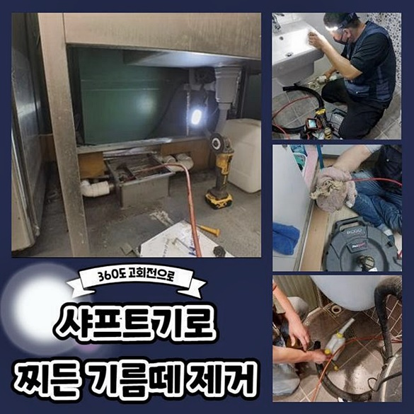
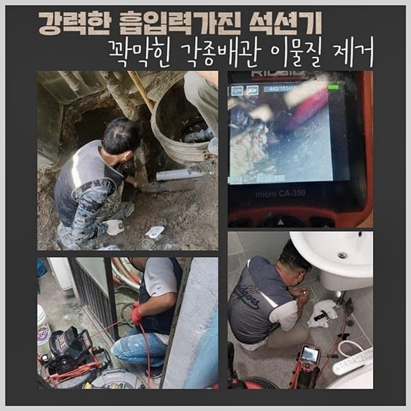
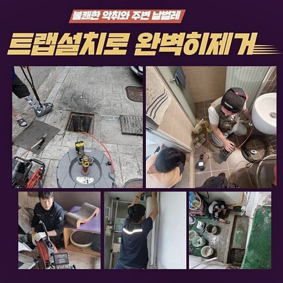
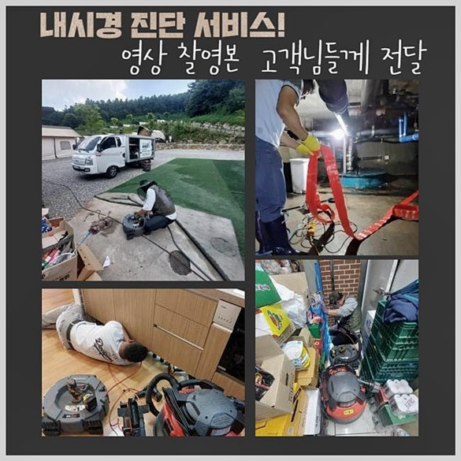
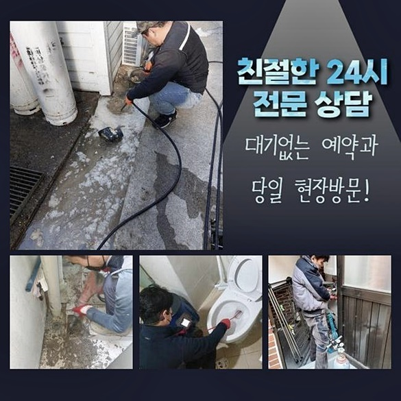
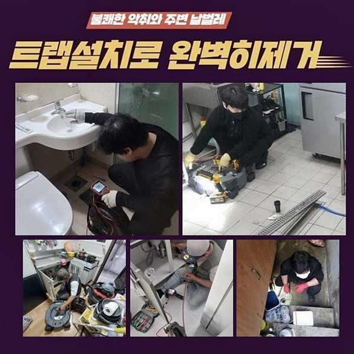
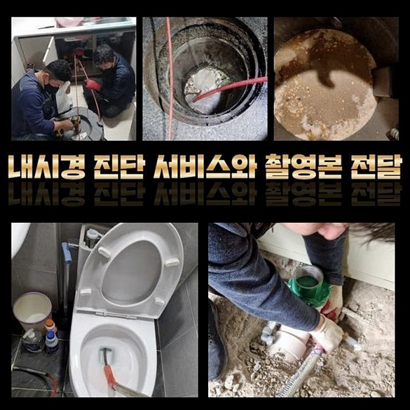

🏠 안성 도기동하수구역류 서운면 하수구청소 설비업체
용인시 처인구 배관막힘 전문 시공 후기

📋 작업 개요
- 위치: 용인시 처인구, 수원시 영통구, 화성시 동탄
- 서비스 유형: 배관막힘, 하수구청소, 누수수리, 내시경점검
- 작업 일시:
- 업체명: 하수구수사대 (010-5615-2118)
🔍 문제 상황
안성 도기동하수구역류 서운면 하수구청소 설비업체
하수관 고장이 생긴다면 다각적으로 불편이 등장합니다
배수시스템이 망가졌으니 음식물 조리를 못하게 됨은 당연하고 화장실도 못 쓸수가 되어버릴수 있답니다
해당되는 기초적 부분들은 한시간 정도 쓰지 못해도 큰 불편함을 발생시킬수가 있죠
게다가 해당 트러블이 근방의 세대원에까지 피해를 가할수가 있어요
그땐 예상을 뛰어넘는 금전보상이 요구될수 있어요
그러하기에 배수관정체가 발현됐다면 고민치마시고 즉시 수리할 기술자를 수소문해서 정리하셔야 돼요
뚫음시공을 혼자서 처리할수 있다 여러가지 도구들로 다양한 시도를 해보실수는 있지만 그렇게 힘들죠
과정중에 반대로 배수관쪽에 자극을 주어서 물이 새버리거나 주변의 부속품에 문제를 일으켜 예상을 뛰어넘는 수리로 견적금이 늘어날수도 있겠죠
일전에 방문한 처소의 의뢰자께선 무리해서 고쳐보려 단행하다 누수까지 발전했던 적이 있어요
공연스레 만지시다가 정황이 더욱더 까다로워지기도 하므로 막힘상태가 심각하다면 기술자를 수소문해서 고치시는 것이 나을거예요
이번에 간 곳은 일반주택으로 긴박한 전화를 받은뒤에 출동하였죠
의뢰인분이 휴일용으로 간간이 쓰신다 말하셨고 주차장쪽에 물샘이 일어난 상황이었습니다
이곳에 방문하지도 않았고 일주일만에 방문해보니까 역류증세가 나타나서 무지 놀라셨다고 하네요
손님분에게 특정위치에서 막힘현상이 생겨난것으로 보인다 이야기하였더니 수리시간은 얼마만큼이나 걸리게 되는지 물으셔서 비용을 포함한 모든것을 고지해드렸고 즉각 수리를 원하신다고 말하셨기에 공사에 착수했어요

🔎 원인 분석
💡 전문가 진단: 정밀 진단 장비를 사용하여 슬러지의 고착 여부를 판명하고 타격/세척 작업을 실시했습니다.
하수도와 관련지어서 기억해야되는 부분은 막힘현상은 상층부에서 발생하기도하고 배수구조에 의해 하부에서 손상되면서도 발발할수있다는 사실이죠
그러하기에 상황을 어림잡아서 고쳐서는 확실한 마감을 기대할수 없겠죠
그렇기에 정확히 상황을 진단하고 해결법을 모색해야 해요
막무가내로 뚫는다 하여 마무리되는게 아니죠
그리되면 잘못된 지점을 작업하여 몇달도 안되어 또다시 배수관청소 업무를 해야 할 수 있답니다
그러하기에 자세한 조사가 필요한거죠
우리팀은 보유한 소형촬영 설비로 안쪽의 정황을 파악하였어요
체감적으로 유분기가 많다고 여겨져서 물어보았더니 저번에 접시를 닦는과정에서 그대로 흘려보냈다고 하셨네요
저는 그즉시 그부분이 정체의 큰 연유라고 짐작하게 되었답니다
의뢰자께서는 으레 기름기는 액상이고 끓인 물을 사용해서 세정했기에 이런일이 일어날거라 생각지 못했다고 말하셨답니다
대다수가 유분은 관로에 부어도 문제가 발생치 않을거라고 여기시는데요
그부분은 실제적인 내용과 차이가 있고 외려 트러블의 주 이슈가 될수가 있답니다
기름성분은 200도 가까이에서 유동적으로 움직이게 됩니다
하지만 난점은 상온에서는 엉켜버리게 되는데요
그게 상존하면서 기타 잔재들과 뭉쳐버리면서 점차적으로 부피가 증대되고 결론적으로 통로를 가로막기 때문에 이곳과 같이 물의유출이 나타나는 겁니다

🔧 작업 과정
그렇기에 금번 거주지처럼 주기적인 관리를 피하고 싶으시다면 평소 찌꺼기들을 하수관으로 투입하지 않으시는게 바람직해요
본 현장에서도 해당하는 문제점들을 이야기하였더니 조심해야 하겠다고 말하시더라고요
배관카메라를 중간중간 집어 넣어 관측하며 기름슬러지가 똑바로 소제되는지 파악하였죠
물론 이렇게 기름슬러지가 차있다고 하여 곧바로 통수가 안되는건 아니랍니다
중간중간 이물들이 누증되면서 기름성분과 합쳐져서 통수가 안되게 됩니다
온수를 꾸준하게 내려보내서 막힘을 막는것도 생각할수 있지만 본질적인 해결은 이것 가지고는 힘들죠
그리고 시중의 화학제품도 매한가지로 굳은 침전물을 온전히 처치하긴 힘들다고 봐야죠
또한 분쇄기 도구를 가동시켜 무거워진 기름기를 털어냈고 그외 내부에 잔류하는 머리카락 뭉치와 소석회 물질들까지 처리하였어요
오랜시간 쌓여온 이물들이 어마어마하다는 걸 인식할수가 있었답니다
내시경cctv를 살펴보면서 조리 있게 누적된 쓰레기들을 처리했더니 역류된 것이 서서히 사라졌는데 생각과 같이 개운하게 통수가 되기 힘들어요
그건 밖의 맨홀부근에도 이물들이 누적되었단 걸 의미합니다
가정 안에서 처치할 것들은 마무리했기에 맨홀쪽만 정리하고 나면 결과가 나올것으로 예상했죠
고객께 이러한 내용들을 알려드린 다음에 바깥쪽으로 자리를 옮겨 맨홀커버를 개방하여 검사해 보았죠
예상과 같이 관로에 침전물이 넘쳐났었죠
공간을 마련한 다음 고압청소기를 활용하여 신속히 소제하였어요
그나마 내측에서 청소했기 때문에 신속하게 처리되었어요
이제서야 관이 열리면서 경쾌하게 물이 빠졌어요
탁수가 없어질때까지 지속적으로 고압청소로 자극하였고 그후 깨끗한 수돗물이 나오게 되었어요
청결한 물줄기가 나와야 안쪽에 이물들이 소거되었단 걸 뜻하므로 필수적인 과정입니다
고형물들도 해당 방안으로 완벽하게 처치했답니다
보는건 최종 찌꺼기들인데 이것 외로도 상당량이 정리되었죠
해당 주택에서 하수관을 청소하면서 재차 주기적 검진은 물론이거니와 일상적으로도 이용을 제대로 해야 된다는 사항을 곱씹었으며 그 내용을 손님분에게도 안내해 드렸죠
의뢰인분도 찌꺼기만 살짝 들어내면 완결될 것으로 생각하셨는데 정황이 커져서 당황스러우셨지만 뚫린 모습을 보시고는 안심하셨죠
이제부턴 늘상 이용하는 공간이 아니어서 무작정 내팽개치치말고 정기적으로 검열받아야 하겠다고 말하시더라고요


✅ 작업 완료
반대 방향으로 누출된 침전물들 때문에 더럽혀진 주변공간을 깨끗하게 치웠어요
통상적으로 배관트러블이 생겨나면 관련 수선만 시행한뒤에 마감된다고 여기실수 있지만 저희측은 뒷수습까지 살뜰하게 시행해요
그리고 주변 건축물에도 쇼크를 남기면 안되기에 그것들도 항시 신경쓰고 있어요
의뢰인분이는 다소 황당한 경험이었으나 우리팀의 훌륭한 결과를 보시면서 안도하실수 있었죠
우리들은 관로정체가 일어났다면 늦은 시간이라도 즉시 방문하여 고쳐드립니다
이런 고장은 가능한한 빨리 처리해야 상황이 심각해지지 않았어요




⚠️ 하수구 배관 막힘 예방 및 관리 가이드
- ✅ 머리카락, 비닐, 물티슈 등 물에 분해되지 않는 이물질은 절대 흘려보내지 마세요.
- ✅ 기름기 많은 식기는 설거지 전 키친타올로 먼저 기름때를 닦아내세요.
- ✅ 주기적으로 배수구에 뜨거운 물을 가득 부어주어 유지방 고착을 방지하세요.
- ✅ 작업 후 1년 이내 재발 시 무상 A/S 보증 서비스를 제공합니다.
💡 핵심 정리
- 확실한 장비 작업(내시경 점검 및 샤프트 스케일링)으로 원인을 뿌리 뽑습니다.
- 작업 후 1년 이내에 동일한 부위 재발 시 100% 무상 A/S 서비스를 보장합니다.
- 서울 · 경기 · 인천 전 지역에 24시간 언제든 긴급 출동할 수 있도록 항시 대기 중입니다.
❓ 자주 묻는 질문 (FAQ)
🚨 용인시 처인구 배관막힘 문제로 고민이신가요?
정확한 원인 진단과 확실한 시공으로 재발 없는 해결을 약속드립니다.
24시간 긴급 출동 | 서울 · 경기 · 인천 전지역 | 1년 내 재발 시 무상 A/S